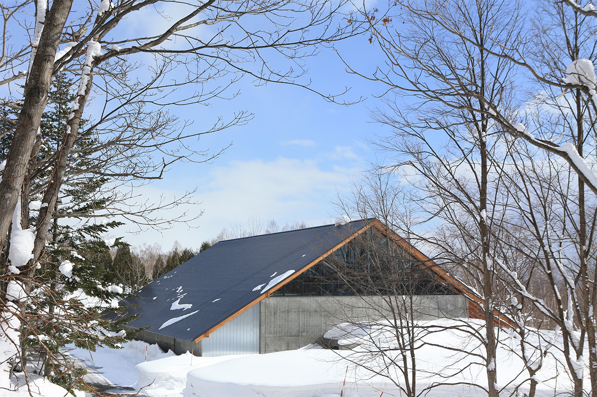
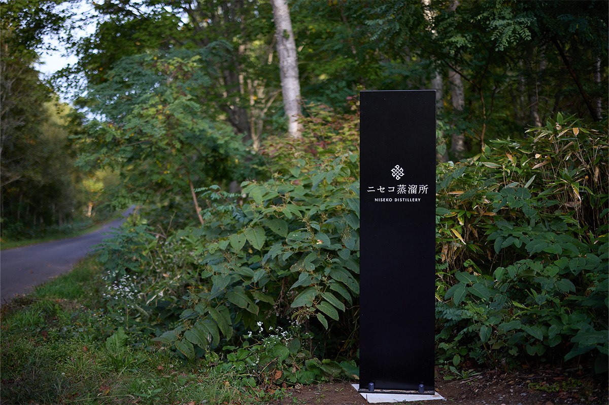
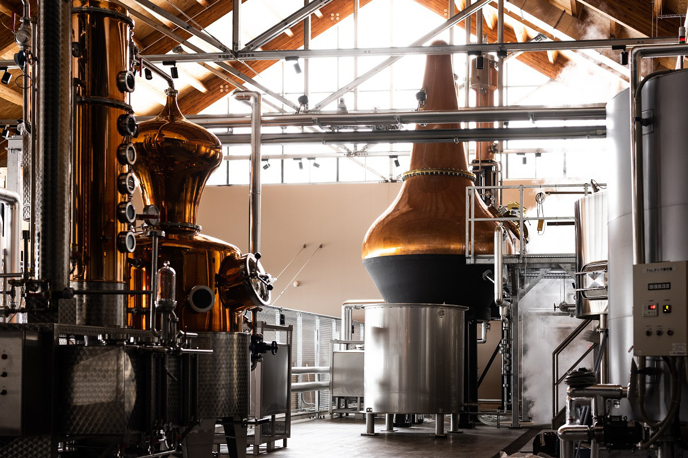
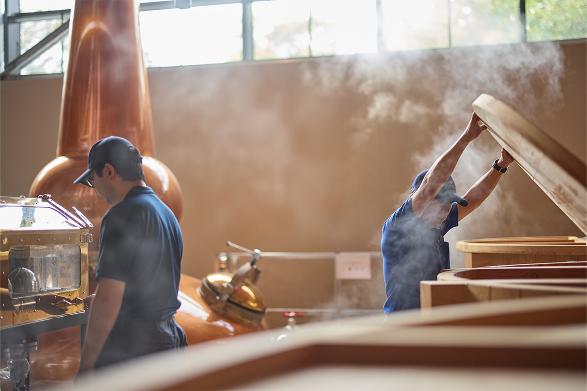
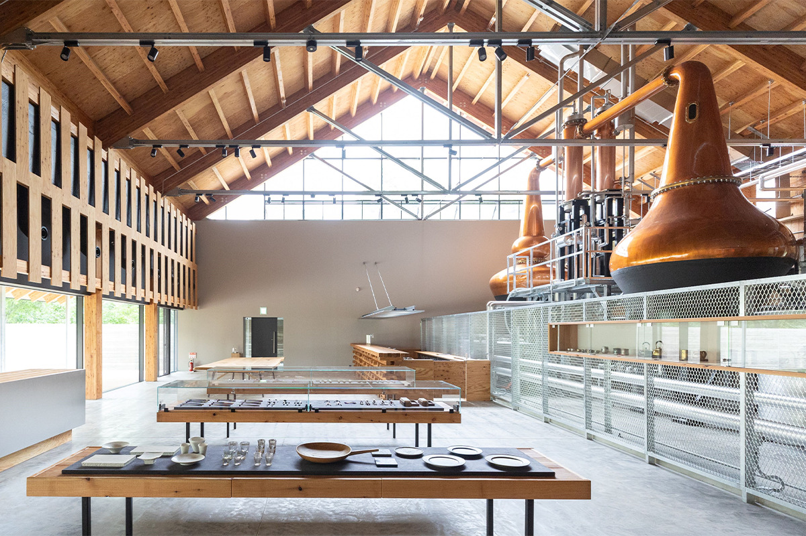
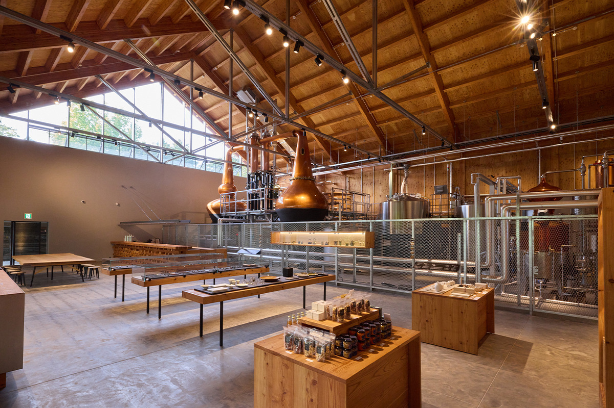
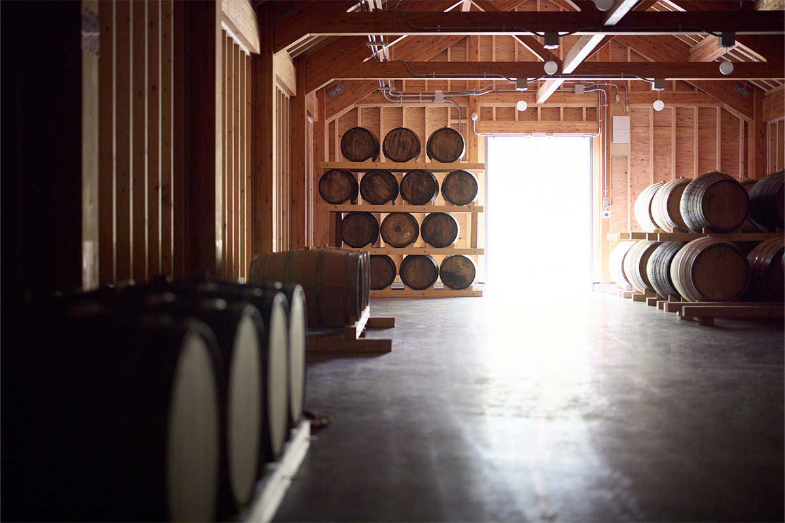
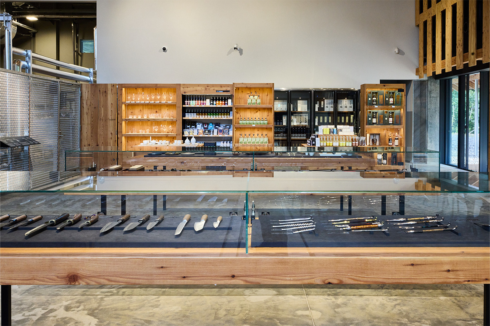
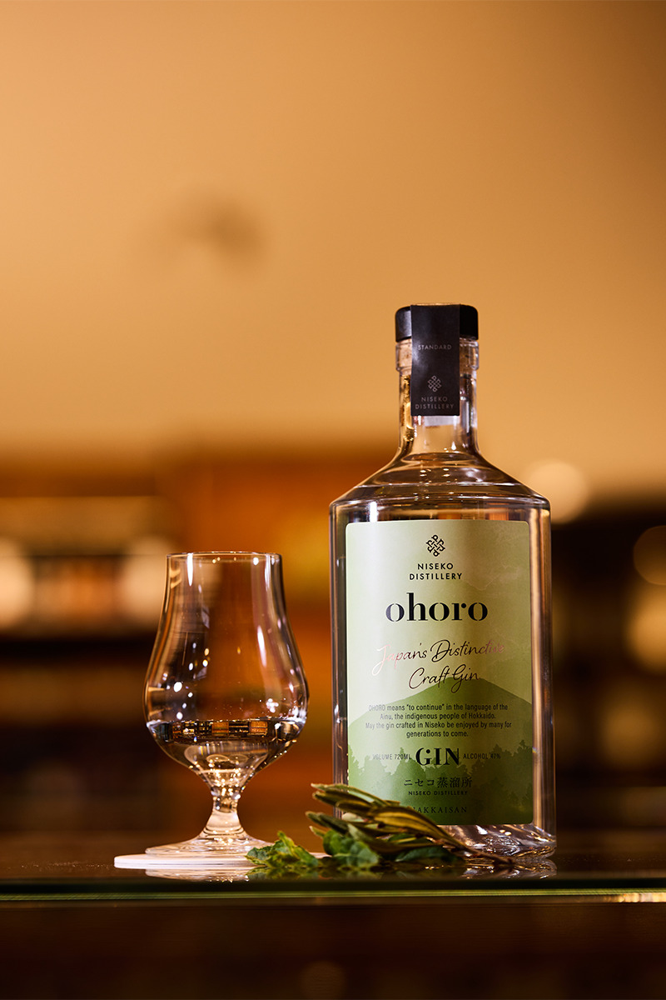

Префектура Хоккайдо · Нисэко · винокурня
NISEKO DISTILLERY: виски и джин из снеговой воды Нисэко

В городке Нисэко, известном лыжникам всего мира, в 2021 году открылась винокурня, которая делает японский виски на чистой воде с гор Нисэко-Аннупури. Пока виски дозревает в бочках, первым её напитком стал джин с айнским именем.
Место
Снег, вода и лес
Город Нисэко лежит на западе центральной части Хоккайдо, между горным массивом Нисэко-Аннупури, входящим в квазинациональный парк, и горой Йотэй из национального парка. В мире его знают как горнолыжный курорт, но у обильного снега есть и другая сторона: он даёт мягкую воду высокого качества. К тому же зимы здесь, по меркам Хоккайдо, не слишком суровые, и местные фермы собирают хороший урожай.

Винокурня NISEKO DISTILLERY поставила себе цель делать изящный, тонкий и сбалансированный виски и готовилась к открытию с 2019 года. Здание достроили в конце 2020 года. Его проектировали так, чтобы оно растворилось в охраняемом лесу вокруг и не спорило с пейзажем: создатели винокурни разделяют принцип самого города Нисэко жить в ладу с природой.

Производство
Виски, которому нужно время
В конце марта 2021 года здесь начали гнать солодовый виски из ячменного солода и вместе с ним джин. Общий объём двух напитков задумали около 90 000 литров в год. Виски должен выдержать в бочках не меньше трёх лет, поэтому в 2021 году его выход на рынок ожидали не раньше 2024 года.

Интерьер
Лиственница из округа Сирибэси
Внутри много лиственницы из округа Сирибэси, к которому относится Нисэко: дерево должно было связать здание с лесом за окнами. Из лиственницы сделана и барная стойка, и от неё в зале тепло, как в деревянном доме. Столы и стулья заказали у мастерской gauzy calm works из Асахикавы, которая делает мебель по индивидуальным заказам.


Визит
Экскурсия, бар и магазин
В 2021 году попасть на винокурню, даже просто за покупками, можно было только по предварительной записи. Экскурсия длится 90 минут: сотрудники производства рассказывают о перегонке прямо у кубов, показывают склад с бочками, а в конце можно за отдельную плату попробовать напитки в баре.

В Нисэко приезжает много иностранцев, и магазин винокурни задуман как витрина Японии для них. Кроме алкоголя здесь продают изделия традиционных ремёсел, вещи, в которых чувствуется рука мастера и которые, как виски, со временем становятся только ценнее.

Джин
ohoro GIN: «продолжение» на языке айнов
Первым напитком винокурни стал джин ohoro GIN (Standard), его выпустили к открытию в 2021 году. «Охоро» по-айнски значит «продолжаться»: создатели хотели, чтобы джин, родившийся в Нисэко, полюбили многие и чтобы эта история длилась всегда.

Среди трав джина есть растения Хоккайдо: болотный мирт и японская мята. Вкус чистый и мягкий, но с крепкой основой и лёгким цитрусовым ароматом, поэтому джин хорош и как основа для коктейлей. Крепость 47%, бутылка 720 мл стоила 4180 иен с налогом в 2021 году, подарочная коробка ещё 198 иен.
NISEKO DISTILLERY
- Адрес
- префектура Хоккайдо, уезд Абута, Нисэко, Нисэко, 478-15
- Часы работы
- 10:00–17:00
- Выходные
- без выходных
- Цены / Вход
- вход и экскурсия бесплатно, напитки в баре платно
- Даты
- экскурсии 4 раза в день (10:00, 11:30, 14:00, 15:30, по 90 минут), до 10 человек, только по записи на сайте (запись открывается за 2 недели и закрывается в полдень накануне)